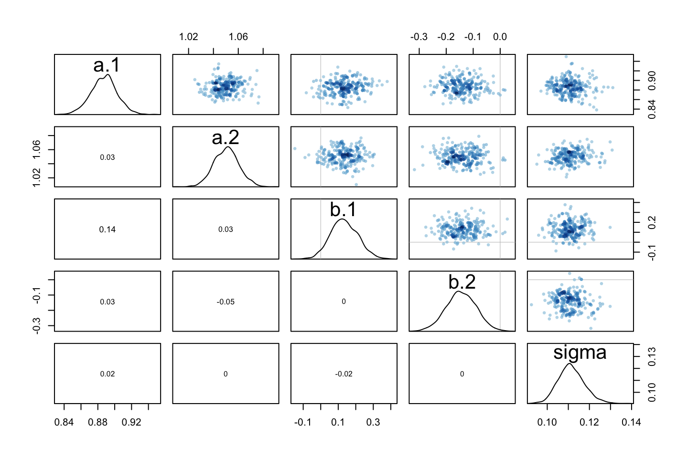
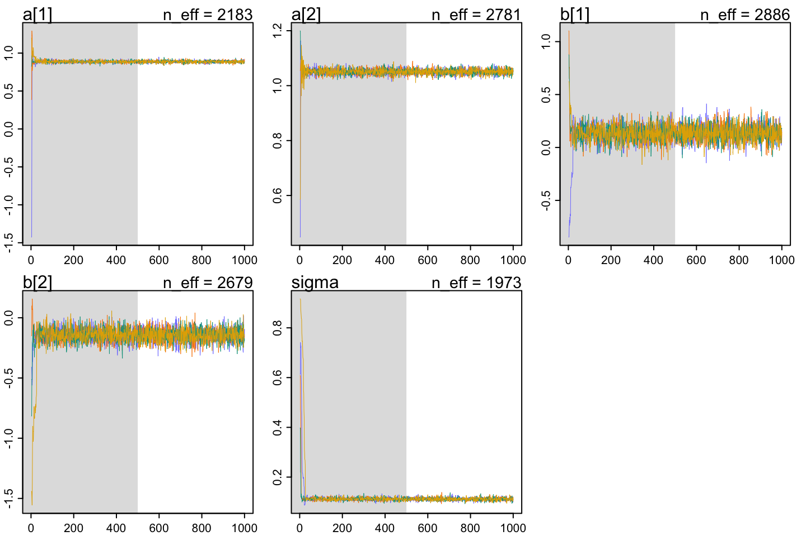

10 Chapter 9 - Markov Chain Monte Carlo
10.1 Good King Markov and his island kingdom
10.2 Metropolis algorithms
it is sampling randomly starting from the ending point of the previous accepted sample.
This is inefficient, as the randomness will take time to find samples that are acceptet. Hence we rarely use this today.
HMC is dealing with this flaw, notice that Metropolis Hastings will always converge, but it will just take time.
10.3 Hamiltonian Monte Carlo
This is a more effect approach for sampling. It is two hyper parametersÆ
- Leapfrog steps (number of steps to take / time to run)
- Stepsize, that is how long the steps are
We see that it is will start from where it ended, and then it is running for the n number of leapfrogs, where the gravity will force it towards a dense region.
We see that HMC is able to make a chain that is going in circles. The folllowing is an example. This is not very effective. Although over time it will converge to a stable model. We want a scenario as in the left window. The right window is having U-Turns, we dont want these.
The problem with U-Turns is that the step size and the number of steps that is taken, is unfortunate letting the model end the same place as it started. Hence for HMC to be effective, one must really tune these parameters correctly.
Then how are we dealing with U-Turns?
We see that Ulam is able to find appropriate step sizes and number of steps (leapfrog steps), through a warmup phase. Notice that these do not account as samples, although the samples drawn with the tuned hyperparameters are.
This is an example of a sampler that is inefficient: <https://chi-feng.github.io/mcmc-demo/app.html?algorithm=RandomWalkMH&target=banana> (needs to be seet to HMC, standard dist, and increase leapfrog steps)
Fancy models: scientist has invented an adaptive model chain, where it will end if it sees a U-Turn, this is called (NUTS - No U-Turn sampler). This is essentially pointing in both directions. to find out if the sampler started going backwards.
10.4 Easy HMC: ulam
10.4.1 Fitting using quap
The following is an example of how the ulam function works. We are going to use the example from chapter 8 about predicting log GDP based on ruggedness of a nation.
library(rethinking)
data(rugged)
d <- rugged
d$log_gdp <- log(d$rgdppc_2000)
dd <- d[ complete.cases(d$rgdppc_2000) , ]
dd$log_gdp_std <- dd$log_gdp / mean(dd$log_gdp)
dd$rugged_std <- dd$rugged / max(dd$rugged)
dd$cid <- ifelse( dd$cont_africa==1 , 1 , 2 )The following is an example of how to specify the model and fit it using the quap method.
m8.3 <- quap(
alist(
log_gdp_std ~ dnorm( mu , sigma ) ,
mu <- a[cid] + b[cid]*( rugged_std - 0.215 ) ,
a[cid] ~ dnorm( 1 , 0.1 ) ,
b[cid] ~ dnorm( 0 , 0.3 ) ,
sigma ~ dexp( 1 )
)
, data=dd )
precis( m8.3 , depth=2 )
|
|
|
|
We see that we have an index model instead of indicator variables, thus one alpha and beta for each category. Where 1 = Africa and 2 = all other countries.
Thus we see that alpha parameter (intercept) is positive for both countries, we also set the mean to be positive. And we see that the coefficient for the ruggedness is positive for Africa and negative for the rest of the world.
We will also fit this model using Hamiltonian Monte Carlo
10.4.2 Fitting using HMC
This section will be separated in two parts:
10.4.2.1 Preparing data
To do this, one must transform the variables just as we did with the quap method.
Although for this method, we will arrange the data in a list. The benfit is that the different does not have to be of the same length, when arranged in lists.
dat_slim <- list(
log_gdp_std = dd$log_gdp_std,
rugged_std = dd$rugged_std,
cid = as.integer(dd$cid)
)
str(dat_slim)## List of 3
## $ log_gdp_std: num [1:170] 0.88 0.965 1.166 1.104 0.915 ...
## $ rugged_std : num [1:170] 0.138 0.553 0.124 0.125 0.433 ...
## $ cid : int [1:170] 1 2 2 2 2 2 2 2 2 1 ...10.4.2.2 Sampling from the posterior
Now we are going to fit the model using ulam, which relies on the stan engine.
m9.1 <- ulam(
alist(
log_gdp_std ~ dnorm(mu,sigma),
mu <- a[cid] + b[cid] * (rugged_std - 0.215),
a[cid] ~ dnorm(1,0.1),
b[cid] ~ dnorm(0,0.3),
sigma ~ dexp(1)
)
,data = dat_slim
,chains = 1 #no of independent chains to sample from
)##
## SAMPLING FOR MODEL 'f3314e777e4c586121dcc9de98266129' NOW (CHAIN 1).
## Chain 1:
## Chain 1: Gradient evaluation took 4.4e-05 seconds
## Chain 1: 1000 transitions using 10 leapfrog steps per transition would take 0.44 seconds.
## Chain 1: Adjust your expectations accordingly!
## Chain 1:
## Chain 1:
## Chain 1: Iteration: 1 / 1000 [ 0%] (Warmup)
## Chain 1: Iteration: 100 / 1000 [ 10%] (Warmup)
## Chain 1: Iteration: 200 / 1000 [ 20%] (Warmup)
## Chain 1: Iteration: 300 / 1000 [ 30%] (Warmup)
## Chain 1: Iteration: 400 / 1000 [ 40%] (Warmup)
## Chain 1: Iteration: 500 / 1000 [ 50%] (Warmup)
## Chain 1: Iteration: 501 / 1000 [ 50%] (Sampling)
## Chain 1: Iteration: 600 / 1000 [ 60%] (Sampling)
## Chain 1: Iteration: 700 / 1000 [ 70%] (Sampling)
## Chain 1: Iteration: 800 / 1000 [ 80%] (Sampling)
## Chain 1: Iteration: 900 / 1000 [ 90%] (Sampling)
## Chain 1: Iteration: 1000 / 1000 [100%] (Sampling)
## Chain 1:
## Chain 1: Elapsed Time: 0.057138 seconds (Warm-up)
## Chain 1: 0.038179 seconds (Sampling)
## Chain 1: 0.095317 seconds (Total)
## Chain 1:We see that there is a warmup, that is something about calibrating the model to find the distribution that it should draw from, and then it starts drawing samples.
precis(m9.1,depth = 2)
|
|
|
|
|
|
Now we see that the outcome is the same, although we have two new outputs:
- n_eff: crude estimate of the number of independent samples you managed to get. Due to anti-correlation, we are able to get more effective number of samples than actual samples. With MC, the samples will be correlated in the way, that it is not just taking samples randomly, hence we will always take a sample in a new region. A low n_eff means that the chain is having a hard time exploring the distriubtion.
- Rhat4: An indicator of the convergence of the Markov Chains to the target distribution. ‘4’ is just the version of the Rhat (\(\hat{R}\)). It is the in chain variation compared to the between chain variation.
10.4.2.3 Sampling again, in parallel
You can sample different chains in the same time, one for each core in your computer.
m9.1 <- ulam(
alist(
log_gdp_std ~ dnorm(mu,sigma),
mu <- a[cid] + b[cid] * (rugged_std - 0.215),
a[cid] ~ dnorm(1,0.1),
b[cid] ~ dnorm(0,0.3),
sigma ~ dexp(1)
)
,data = dat_slim
,chains = 4 #no of independent chains to sample from
,cores = 4 #We use four cores
)10.4.2.4 Visualization
you can plot the sampling, to see the distributions that you find.
rethinking::pairs(m9.1)
Here we see the distribution of the parameters.
10.4.2.5 Checking the chain
We have two visual tools:
traceplots: here we look for:
Stationarity: we want the line to show no trend and stay within the same boundaries over time
good mixing: that the chain rapidly explores the full region and not being stuck in regions.
convergence: that multiple independent chains stick around the same region. When you plot multiple chains it starts getting difficult to see how each chain compares to the others. That is what trank plots is dealing with.
trankplots (trace rank plots): We want to see the histograms of the independent chains overlapping each other.
10.5 Care and feeding of your Markov chain
This section has some illustrations of bad chains. Basically that is just when we see that the probability region is not explored efficiently.
10.5.1 How many samples do you need?
Terminalogy (with defaults):
iter = total number of samples
warmup = iter/2
Then how many samples do you need to estimate the posterior? It is all about the effective number of samples. If the chain is autocorrelated, then the n_eff will be lower than the number of iterations, although if it is anti-correlated, then you can have more effective samples than the number of iterations, that is merely due to the fact that some methods are able to outperform randomness of drawing samples.
Now you must ask yourself, do you want to estimate something around the mean or toward the tails of a distribution. If towards the mean, then you dont need many samples (rule of thumb a 100 or a couple 100), but if you want to explore the tails, then you need a lot of samples, as these are more difficult to explore. Thus there is no good rule of thumb in general terms. Also the shape of the posterior distribution that you are trying to map is affecting, if it is simple, then it is easier to map than if it is complex.
Notice that stan will let you know if it is uncertain around the tails, thus you need more samples.
10.5.2 How many chains do you need?
Always start with one chain when building the model, as the stan will only return error messages and not just errors, when running 1 chain.
Then run multiple independent chains to cross validate the chains and see how they converge. Typically 3 or 4 chains are sufficient.
10.5.3 Taming a wild chain
Basically flat priors or almost flat priors will lead to crazy sampling, as it can explore any region, also totally unrealistic regions. Hence we want to regularize this.
If you have no idea of the priors then go for weakly informative priors, instead of stupid priors, as the likelihood will always outperform these priors.
10.6 Exercises
10.6.1 E4
Explain the difference between the effective number of samples, n_eff as calculated by Stan, and the actual number of samples.
n_eff is the effective number of independent samples, hence samples that are not autocorrelated. We see that very efficient samples can get more effective samples than the actual number of samples being drawn.
10.6.2 E5
Which value should Rhat approach, when a chain is sampling the posterior distribution correctly?
It should approach 1.
10.6.3 E6
Sketch a good trace plot for a Markov chain, one that is effectively sampling from the posterior distribution. What is good about its shape? Then sketch a trace plot for a malfunctioning Markov chain. What about its shape indicates malfunction?
You want it to be stationary and quickly explore the whole region.
Notice that you should run multiple independent chains and then compare their progress, they should be similar otherwise there is something wrong, perhaps you need to regularize the model.
10.6.4 E7
The same as above, just with a good and a bad traceplot
Bad example:
We see that they are not overlapping at all. we want them to overlap (them = independent chains) also they must stay within the same area.
Good example:
Now we see an example where the chains visit the same regions and overlap each other.
10.6.5 M1
Reestimate the terrain ruggedness model from the chapter, but now using a uniform prior for the standard deviation, sigma. The uniform prior should be dunif(0,1). Use ulam to estimate the posterior. Does the different prior have any detectible influence on the posterior distribution of sigma? Why or why not?
New sigma prior
plot(dunif(1:10, min = -10, max = 10),type = 'l')
### Loading the data
library(rethinking)
data(rugged)
d <- rugged
d$log_gdp <- log(d$rgdppc_2000)
dd <- d[ complete.cases(d$rgdppc_2000) , ]
dd$log_gdp_std <- dd$log_gdp / mean(dd$log_gdp)
dd$rugged_std <- dd$rugged / max(dd$rugged)
dd$cid <- ifelse( dd$cont_africa==1 , 1 , 2 )
### Arrange data in lists
dat_slim <- list(
log_gdp_std = dd$log_gdp_std,
rugged_std = dd$rugged_std,
cid = as.integer(dd$cid)
)
#str(dat_slim)
### Fitting the model
m <- ulam(
alist(
log_gdp_std ~ dnorm(mu,sigma),
mu <- a[cid] + b[cid] * (rugged_std - 0.215),
a[cid] ~ dnorm(1,0.1),
b[cid] ~ dnorm(0,0.3),
sigma ~ dunif(0,1)#dexp(1), this is made uniform now
)
,data = dat_slim
,chains = 4 #no of independent chains to sample from
,cores = 4
)precis(m,depth = 2)
|
|
|
|
|
|
rethinking::pairs(m)
traceplot(m)## [1] 1000
## [1] 1
## [1] 1000trankplot(m)
It is difficult to see from the traceplot, as the y scale is so large, hence we inspect the trank plot. We see that sigma in the trank plot is controlled randomness, as it is stationary. Based on the n_eff, we also have an indication of a healthy chain.
10.6.6 H2
Recall the divorce rate example from Chapter 5. Repeat that analysis, using ulam this time, fitting models m5.1, m5.2, and m5.3. Use compare to compare the models on the basis of WAIC or PSIS. To use WAIC or PSIS with ulam, you need add the argument log_log=TRUE. Explain the model comparison results.
#load data and copy
library(rethinking)
data(WaffleDivorce)
d <-WaffleDivorce
# standardize variables
d$D <-standardize(d$Divorce)
d$M <-standardize(d$Marriage)
d$A <-standardize(d$MedianAgeMarriage)
dl <- list(
D = d$D,
M = d$M,
A = d$A
)
# Models
m5.1 <-ulam(
alist(
D ~ dnorm(mu,sigma),
mu <- a+bA*A,
a ~ dnorm(0,0.2),
bA ~ dnorm(0,0.5),
sigma ~ dexp(1)
)
,data = dl
,chains = 4
,cores = 4
,log_lik = TRUE
)
m5.2 <- ulam(
alist(
D ~dnorm(mu,sigma),
mu <-a+bM*M,
a ~dnorm(0,0.2),
bM ~dnorm(0,0.5),
sigma ~dexp(1)
)
,data = dl
,chains = 4
,cores = 4
,log_lik = TRUE
)
m5.3 <- ulam(
alist(
D ~dnorm(mu,sigma),
mu <-a+bM*M+bA*A,
a ~dnorm(0,0.2),
bM ~dnorm(0,0.5),
bA ~dnorm(0,0.5),
sigma ~dexp(1)
)
,data = dl
,chains = 4
,cores = 4
,log_lik = TRUE
)compare(m5.1,m5.2,m5.3,func = WAIC)
|
|
|
|
|
|
We see that if we had to bet money on a model, then 73% of the time m5.1 will win. Although m5.1 and m5.3 is very close to each other.
We can plot this, to get some more information.
We see in the following that the difference between the two bebst models is not overlapping, there is evidance for m5.1 being the best model.
plot(compare(m5.1,m5.2,m5.3,func = WAIC))
We can also infer m5.3 with precis:
precis(m5.3)
|
|
|
|
|
|
We see that marriage has a mean of -0.07 and the standard deviation is on both sides of 0, hence marriage does not include any information, as all information is in the age variable.
10.7 Lecture notes
Why Markov Chains?
- We see that markov chains is not only used in bayesian data analysis, but also for frequentist statistics.
Recap:
Why cant we use quadratic approximation: it is effective for simple models, we see that with flat priors it is the same as classical statistics. Although, when it gets more complicated, this approach will not be feasibile.
Case with Markov Chains:
Will always find the posterior distribution after time. Although it only works on the long run. But the MCMC method may need to run in a long long long time, hence that is a drawback of MCMC.
This is also called the metropolis algorithm. That is from the researcher Nicholas Metropolis, this originates in the research of making fusion bombs.
What is a chain? It is a simulation of chained events. WHere Markov Chain is a sequential simulation, where you can go to different outcomes, based on the current state and not the passed states. Hence it has no memory, this is often an advantage.
Monte Carlo is coming from the city, where people gamble, hence there is not too much about this.
MCMC is an engine of making integration. Hence it takes something very hard make simplify it.
Different strategies of MCMC:
- Metropolis
- Metropolis Hastings
- Gibbs sampling: an efficient version of bullet 2, although in a Silow dimensional setting
- Hamiltonian Monte Carlo (HMC): This does not guess and check. This is more efficient even with very complicated models.
Metropolis and Gibbs: is a guess and check method. This is now a thing of the past
This is an example, where MH sampling is not working well: https://chi-feng.github.io/mcmc-demo/app.html?algorithm=RandomWalkMH&target=banana
The site also have different examples. Key tuning parameter is the step size, we see that the larger the step size, the more different places it will suggest.
We see that the HMC runs a physical simulation, where it is trying to map the probability distribution. How:
- It is set randomly, and the follows the slope of the probability mass. Then it is being flicked, and then it follows the slope again.
HMC has the following tuning parameters:
- Momentum, is random
- Step size, must be tuned.
- Adaptive speed, when it goes downwards, then the velocity is decreasing and when it goes upwards, then the velocity is decreasing. See a video on how this works here: https://chi-feng.github.io/mcmc-demo/app.html?algorithm=HamiltonianMC&target=banana we see that the direction may be set, although the ‘gravitation’ will bend the direction. It is calculating the gradient in each point, to estimate the slope, thus it is mathematically more complicated, although it means that all proposals are acceptet.
- It will run for some fixed time! This is also a tuning parameter. This is called a leapfrog step. We define how many jumps the algorithm can take before the sample proposal is drawn.
Hence HMC, is flicking the particle, that will roll according to the slope, where the momentum is random each time.
We see that each step takes more time to compute in HMC compared to the random samplers, such as Gibbs. Although it requires way less observations.
HMC is basically a gradient descent method to end in a region with a probability mass, where it should always tend towards the probability mass.
HMC problems:
The U-turn phenomenon:
We see that we end up in the same place as we started in the right scenario. Try to follow this link:https://chi-feng.github.io/mcmc-demo/app.html?algorithm=NaiveNUTS&target=banana, select the standard distribution and increase the leopfrog steps(about 65) .
There is a NUTS (no u turn) method. This method is going back and forwards and seeing when it starts turning. Then it stops and takes a sample. This means that we dont need to define the no. of leapfrog steps, hence it is adaptive to where it starts.
The problem of no u turn sampler, is if we have a multimodal distribution (multiple hills), it has a tendency to get stuck in one of the hills. As it needs enough speed to break lose the gravity around probability mass.
For diagnosis, see the slides, there are some examples and notes.